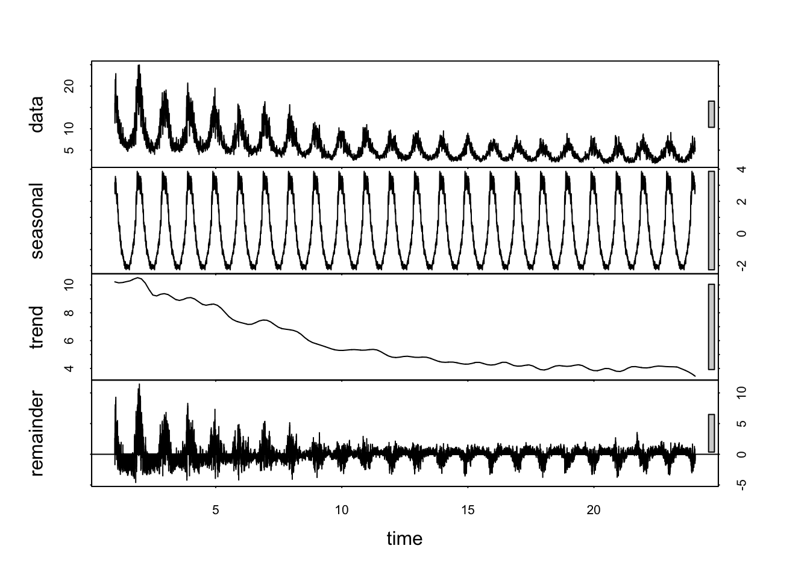
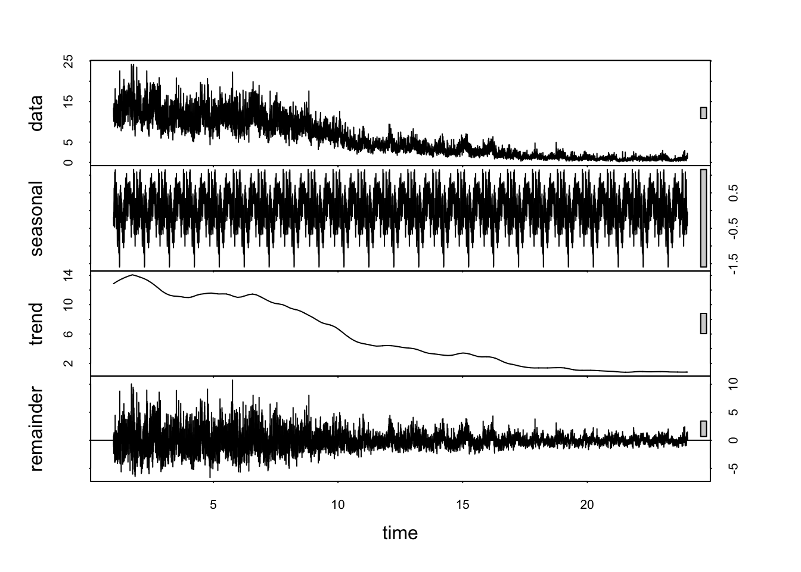
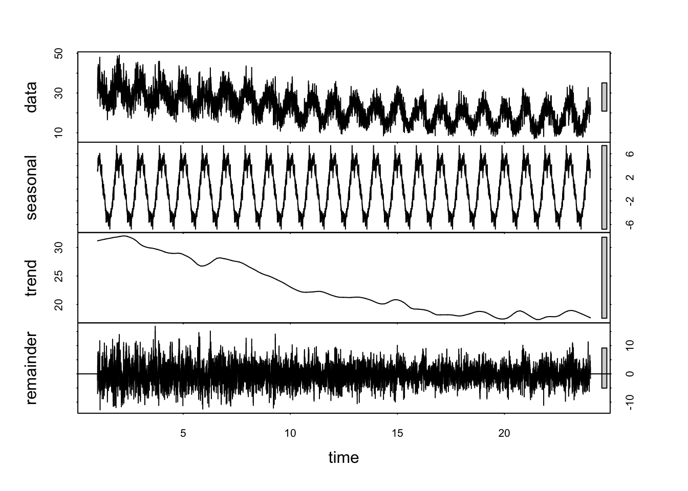
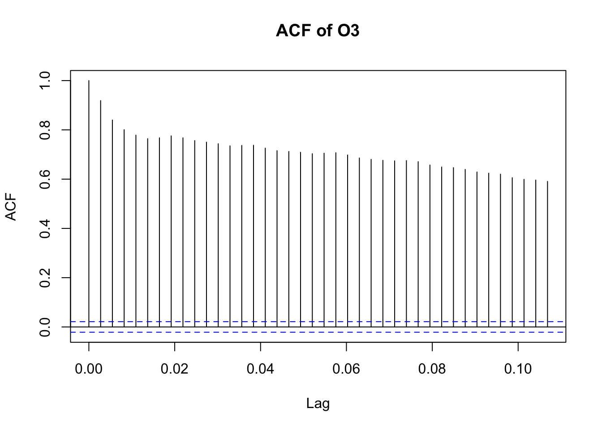

New names:
Rows: 665414 Columns: 22
── Column specification
──────────────────────────────────────────────────────── Delimiter: "," chr
(4): Address, State, County, City dbl (17): ...1, O3 Mean, O3 1st Max Value, O3
1st Max Hour, O3 AQI, CO Mean... date (1): Date
ℹ Use `spec()` to retrieve the full column specification for this data. ℹ
Specify the column types or set `show_col_types = FALSE` to quiet this message.
• `` -> `...1`
ggplot(yearly_aqi, aes(x = year, y = aqi, color = pollutant)) +geom_line(size =1) +geom_point() +theme_minimal() +labs(title ="National Average AQI by Pollutant (2000–2023)",x ="Year", y ="Average AQI")
Warning: Using `size` aesthetic for lines was deprecated in ggplot2 3.4.0.
ℹ Please use `linewidth` instead.
Mapping the PCA scores using AQI-based pollution measures shows that both principal components capture coherent and geographically meaningful air-quality patterns across U.S. states.
PC1 (“overall pollution burden”) is highest in states with elevated levels of NO₂, CO, and SO₂—pollutants associated with combustion sources such as traffic emissions, industrial activity, and fossil-fuel power generation. In the PC1 map, states including Kentucky, Indiana, Illinois, Ohio, Pennsylvania, Tennessee, and parts of the Northeast appear bright red, matching their right-side positions on the PCA biplot near the NO₂/CO/SO₂ vectors. In contrast, states in the Mountain West, northern Plains, and parts of the Southwest—such as Wyoming, Idaho, Montana, Utah, and Colorado—exhibit low PC1 scores, consistent with cleaner overall AQI profiles and their left-side positioning in the biplot.
PC2 (“pollution composition: ozone vs combustion pollutants”) also shows a geographically plausible structure. States with strong ozone-dominated pollution profiles—including Arizona, Nevada, Utah, and parts of the West Coast—display high PC2 values, aligning with their upward/rightward placement near the O₃ vector in the biplot. Conversely, states with stronger combustion-related pollution signatures (SO₂/NO₂/CO)—particularly in the Midwest, Great Lakes region, and portions of the Southeast—exhibit lower PC2 scores, reflecting their downward/leftward orientation in the PCA plot.
Overall, the spatial patterns observed in both PC1 and PC2 maps strongly validate the multivariate interpretation of the PCA results. The principal components capture real and well-documented regional differences in not only pollution intensity (PC1) but also pollution type (PC2), confirming the geographical and environmental relevance of the AQI-based PCA decomposition.
By pollutant types
Relationship
library(reshape2)
Attaching package: 'reshape2'
The following object is masked from 'package:tidyr':
smiths
corr_vars <- df_clean %>%select(o3_aqi, co_aqi, so2_aqi, no2_aqi)corr_mat <-cor(corr_vars, use ="pairwise.complete.obs",method ="spearman")corr_df <-as.data.frame(corr_mat) %>%rownames_to_column("var1") %>%pivot_longer(-var1, names_to ="var2", values_to ="corr")ggplot(corr_df, aes(x = var1, y = var2, fill = corr)) +geom_tile(color ="white") +scale_fill_gradient2(limits =c(-1, 1),low ="brown",mid ="white",high ="blue",midpoint =0) +geom_text(aes(label =sprintf("%.2f", corr)), size =3) +labs(title ="Spearman Correlation among Pollutants (Using AQI)",x ="", y ="", fill ="ρ" ) +theme_minimal(base_size =12)
The STL decomposition of O₃ AQI reveals three key features.
First, ozone displays exceptionally strong and highly consistent seasonality, with levels rising every summer and falling every winter, reflecting its photochemical dependence on sunlight and temperature.
Second, the long-term trend shows little improvement and even a gradual increase in recent years, likely linked to climate-related factors such as hotter summers and widespread wildfires, which make ozone more difficult to control than primary pollutants.
Third, the remainder component contains mostly random fluctuations, indicating that the decomposition successfully isolates the dominant seasonal and trend patterns.
Overall, O₃ AQI is driven by a stable seasonal cycle and a slowly increasing long-term trend, highlighting the ongoing challenge of managing ozone pollution.
Forecast Auto ARIMA
library(forecast)
Registered S3 method overwritten by 'quantmod':
method from
as.zoo.data.frame zoo
fit_arima <-auto.arima(o3_ts)o3_fc <-forecast(fit_arima, h =365) # forecast 1 yearautoplot(o3_fc) +labs(title ="O₃ Forecast for Next Year", x ="Time", y ="O₃ AQI") +theme_minimal()
CO
# Daily average CO AQIco_ts <- df_clean %>%group_by(date) %>%summarise(co =mean(co_aqi, na.rm =TRUE))# Convert to time seriesco_ts <-ts(co_ts$co, frequency =365)# STL decompositionco_stl <-stl(co_ts, s.window ="periodic")plot(co_stl)

so2
# Daily average SO2 AQIso2_ts <- df_clean %>%group_by(date) %>%summarise(so2 =mean(so2_aqi, na.rm =TRUE))# Convert to time seriesso2_ts <-ts(so2_ts$so2, frequency =365)# STL decompositionso2_stl <-stl(so2_ts, s.window ="periodic")plot(so2_stl)

no2
# Daily average NO2 AQIno2_ts <- df_clean %>%group_by(date) %>%summarise(no2 =mean(no2_aqi, na.rm =TRUE))# Convert to time seriesno2_ts <-ts(no2_ts$no2, frequency =365)# STL decompositionno2_stl <-stl(no2_ts, s.window ="periodic")plot(no2_stl)

Autocorrelation
acf(o3_ts, main="ACF of O3")

pacf(o3_ts, main="PACF of O3")
Autocorrelation (ACF)
The ACF of daily O₃ shows extremely slow decay, with correlations above 0.8 for the first several dozen lags. This reflects strong persistence: ozone levels on a given day are highly dependent on conditions in recent days. The long tail of the ACF suggests substantial low-frequency structure, consistent with the strong seasonal cycle seen in the STL decomposition. Such long-memory behavior is typical of atmospheric pollution series influenced by meteorology.
Partial Autocorrelation (PACF)
The PACF displays a dominant spike at lag 1, indicating a strong AR(1) component. Several smaller but still significant spikes up to around lag 10–20 suggest mid-range autoregressive effects. Beyond approximately 50 lags, PACF values fall near zero, indicating that long-range dependence is indirect and primarily driven by the seasonal component rather than high-order autoregressive terms.
Interpretation
Together, the ACF and PACF patterns suggest that daily O₃ can be characterized by a combination of:
A strong short-term autoregressive structure;
A prominent seasonal cycle;
Long-memory behavior arising from atmospheric and climatological processes.
This confirms that O₃ is not a simple short-memory series, but rather a persistent, seasonally driven pollutant whose temporal dynamics reflect both meteorological forcing and photochemical processes.